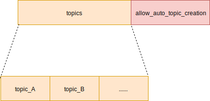
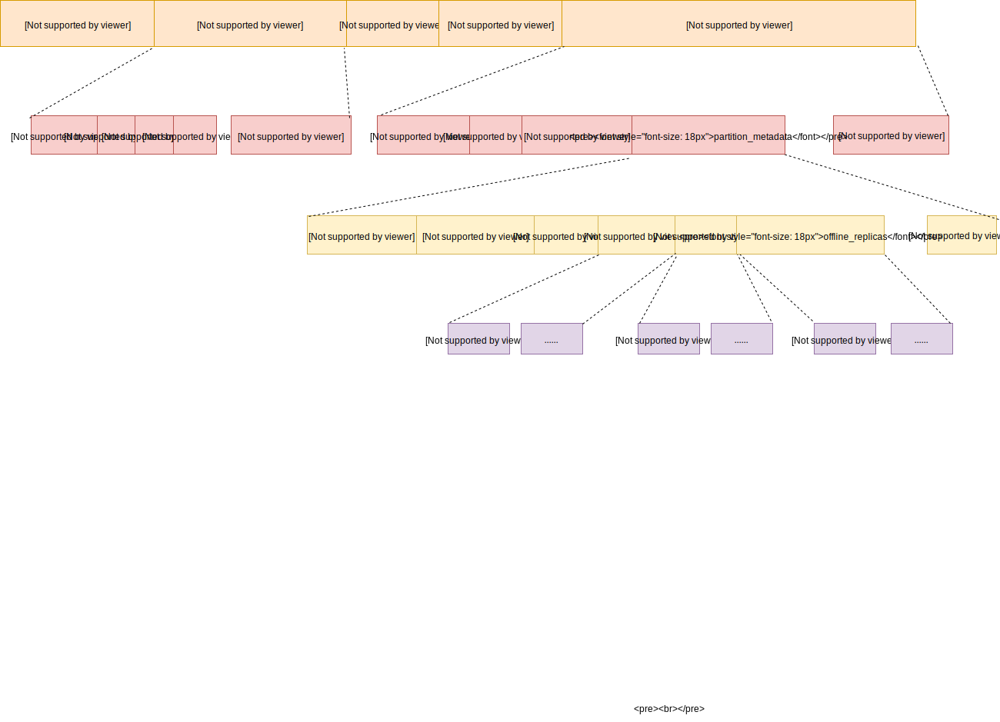

Kafka 客户端 元数据
元数据结构
元数据主要描述了topic在Kafka的集群分布情况，比如以下图为例，

当我们需要发送信息给 topic_A ，首先我们回去Kafka集群获取这个 topic 的分布情况。我们知道 topic 由多个 partition 组成， 每个partition 存储在不同的主机上。因为消息是存在其中一个分区里，我们需要知道分区的分布情况，才能确定发往哪个分区。每个分区可能会有多个副本，我们同样需要这些副本的分布情况，因为只有leader副本才接受消息的读写。
以topic_A为例，它有三个分区，分别分布在集群的三台机器上，并且每个分区都有两个副本。注意到副本也是有状态的，因为follower副本的数据都是从leader副本同步过来的，如果同步的数据量相差很多，那么kafka就认为此follower副本为异常状态。
元数据的请求和响应协议
请求协议
请求协议由MetadataRequest类定义

topics字段，表示要请求获取topic的列表
allow_auto_topic_creation字段，表示如果要请求的topic不存在时，是否需要自动创建它
响应协议
响应协议由MetadataResponse定义

throttle_time_ms字段，表示限速时间，防止请求过快
brokers字段，表示节点信息列表
node_id字段，表示节点的 id 号，Kafka为集群的每台主机，都生成一个唯一的 id 号
host 字段，表示节点的地址
port 字段，表示该节点运行kafka服务的端口号
rack 字段，表示该节点所在的机架位置
cluster_id字段，表示Kafka集群的id号
controller_id字段，表示controller服务所在的node_id
topic_metadata 字段，表示topic信息列表
error_code 字段，表示错误代码，成功的话就为0
topic字段，表示topic的名称
is_internal字段，表示该topic是否为Kafka集群内部的topic。比如Kafka内部就有一个保存offset的topic
partition_metadata字段，表示该topic的所有分区信息列表
partition_id字段，表示分区号
leader字段，表示该分区的leader副本，所在的节点 id
replicas字段，表示该分区的从副本所在的节点 id 集合
isr字段，表示目前同步正常的follower副本
offline_replicas 字段，表示目前同步异常的follower副本
相关类简介
元数据都是保存在Cluster类，Cluster类的属性都是只读的。
Metadata类封装了Cluster，提供了多线程的访问和更新。
MetadataUpdater是提供了更新Metadata的接口
NetworkClient的内部类DefaultMetadataUpdater，实现了MetadataUpdater的接口。
元数据的读取
如果想要获取某个topic的分布信息，首先调用Metadata的add方法，将topic添加到Metadata里。然后调用 requestUpdate 方法，请求更新元数据。最后调用awaitUpdate方法，等待更新完成。
接下来看看这几个方法的定义
1
2
3
4
5
6
7
8
9
10
11
12
13
14
15
16
17
18
19
20
21
22
23
24
25
26
27
28
29
30
31
32
33
34
35
36
37
38
39
40
41
42
43
44
45
46
47
48
49
50
51
52
53
|
public final class Metadata {
private boolean needUpdate; // 是否需要更新
private long lastRefreshMs; // 表示上次更新的时间
private int version; // 版本号，每次数据更新，版本号都会递增
public static final long TOPIC_EXPIRY_MS = 5 * 60 * 1000;
private static final long TOPIC_EXPIRY_NEEDS_UPDATE = -1L;
// 保存了需要更新的topic集合，Key为topic名称，Value为过期时间
// 当长时间没有更新数据时，会将过期的topic删除掉
private final Map<String, Long> topics;
public synchronized void add(String topic) {
// 如果该topic是新增的，那么就会主动请求更新
if (topics.put(topic, TOPIC_EXPIRY_NEEDS_UPDATE) == null) {
requestUpdateForNewTopics();
}
}
private synchronized void requestUpdateForNewTopics() {
// 设置lastRefreshMs为0，这样在判断是否需要更新时，就可以返回true
this.lastRefreshMs = 0;
requestUpdate();
}
public synchronized int requestUpdate() {
// 设置needUpdate属性为true
this.needUpdate = true;
// 返回当前的版本号
return this.version;
}
// 等待数据更新完成，lastVersion表示更新前的版本号
public synchronized void awaitUpdate(final int lastVersion, final long maxWaitMs) throws InterruptedException {
long begin = System.currentTimeMillis();
long remainingWaitMs = maxWaitMs;
// 通过比较版本号，来确定是否更新完成
while (this.version <= lastVersion) {
AuthenticationException ex = getAndClearAuthenticationException();
if (ex != null)
throw ex;
// 调用监视锁，等待
if (remainingWaitMs != 0)
wait(remainingWaitMs);
// 如果等待超过了指定时间，那么抛出超时异常
long elapsed = System.currentTimeMillis() - begin;
if (elapsed >= maxWaitMs)
throw new TimeoutException("Failed to update metadata after " + maxWaitMs + " ms.");
// 更新等待时间
remainingWaitMs = maxWaitMs - elapsed;
}
}
}
|
元数据的更新
Metadata提供了update方法，用来更新Cluster数据。
1
2
3
4
5
6
7
8
9
10
11
12
13
14
15
16
17
18
19
20
21
22
23
24
25
26
27
28
29
30
31
32
33
34
35
36
37
38
39
40
41
42
43
44
45
|
public final class Metadata {
// 数据监听器
private final List<Listener> listeners;
// topic集合，Key为topic名称，Value为过期时间
private final Map<String, Long> topics;
public synchronized void update(Cluster newCluster, Set<String> unavailableTopics, long now) { // 设置needUpdate为false，因为已经更新完成
this.needUpdate = false;
// 设置最后一次更新的时间
this.lastRefreshMs = now;
this.lastSuccessfulRefreshMs = now;
// 递增版本号
this.version += 1;
// 如果运行topic过期
if (topicExpiryEnabled) {
// 遍历topic集合
for (Iterator<Map.Entry<String, Long>> it = topics.entrySet().iterator(); it.hasNext(); ) {
Map.Entry<String, Long> entry = it.next();
long expireMs = entry.getValue();
// 如果该topic的元数据是第一次获取，那么更新它的过期值
if (expireMs == TOPIC_EXPIRY_NEEDS_UPDATE)
entry.setValue(now + TOPIC_EXPIRY_MS);
// 如果该元数据很久没更新，kafka会认为该topic已经很久没使用了，就会从topics集合中删除
else if (expireMs <= now) {
it.remove();
}
}
}
// 执行监听器，比如在consumer订阅消息时会用到
for (Listener listener: listeners)
listener.onMetadataUpdate(newCluster, unavailableTopics);
// 更新cluster数据
if (this.needMetadataForAllTopics) {
this.needUpdate = false;
this.cluster = getClusterForCurrentTopics(newCluster);
} else {
this.cluster = newCluster;
}
// 通知等待更新的线程
notifyAll();
}
}
|
发送网络请求
NetworkClient每次poll的时候，都会调用MetadataUpdater的maybeUpdate方法， 检查Metadata是否需要更新。Metadata的timeToNextUpdate方法，会返回当前时间离下次更新时间的间隔。如果间隔为0，则表示需要立即更新
1
2
3
4
5
6
7
8
9
10
11
12
|
public final class Metadata {
public synchronized long timeToNextUpdate(long nowMs) {
// 如果设置了needUpdate，则认为需要立即更新，返回 0
// metadataExpireMs定义了数据的过期时间，如果当前时间大于过期时间，则表示需要立即更新，返回 0
//否则计算当前时间离过期时间的差值
long timeToExpire = needUpdate ? 0 : Math.max(this.lastSuccessfulRefreshMs + this.metadataExpireMs - nowMs, 0);
// refreshBackoffMs表示两次更新的最小间隔时间，所以当前时间必须大于上次更新时间的一定差值
long timeToAllowUpdate = this.lastRefreshMs + this.refreshBackoffMs - nowMs;
// 返回两者的最大值
return Math.max(timeToExpire, timeToAllowUpdate);
}
}
|
因为Kafka的集群的每个节点，都会存储着元数据。Kafka客户端在请求元数据时，会从中挑选出负载最轻的节点。至于如何判断负载程度，是以每个节点的发送队列的长度为准，这个队列就是以前介绍的InflightRequest队列。算法如下：
1
2
3
4
5
6
7
8
9
10
11
12
13
14
15
16
17
18
19
20
21
22
23
24
25
|
public Node leastLoadedNode(long now) {
// 获取目前所涉及到的节点列表
List<Node> nodes = this.metadataUpdater.fetchNodes();
int inflight = Integer.MAX_VALUE;
Node found = null;
// 生成一个随机数，用来选择随机的初始地址
int offset = this.randOffset.nextInt(nodes.size());
// 遍历节点
for (int i = 0; i < nodes.size(); i++) {
int idx = (offset + i) % nodes.size();
Node node = nodes.get(idx);
// 获取当前节点的请求数
int currInflight = this.inFlightRequests.count(node.idString());
// 如果该节点的请求数为0，并且允许发送请求，则直接返回
if (currInflight == 0 && isReady(node, now)) {
return node;
} else if (!this.connectionStates.isBlackedOut(node.idString(), now) && currInflight < inflight) {
// 查看该节点的连接是否被禁止，然后比较请求数，选择请求数最小的那个
inflight = currInflight;
found = node;
}
}
return found;
}
|
处理网络响应
当收到元数据的响应时，NetworkClient在调用poll方法里，会解析元数据请求的响应，然后将响应传递给DefaultMetadataUpdater，实现数据更新。
NetworkClient有一个内部类DefaultMetadataUpdater，实现了更新接口。
1
2
3
4
5
6
7
8
9
10
11
12
13
14
15
16
17
18
19
20
21
22
23
24
25
26
27
28
29
30
31
32
|
public class NetworkClient implements KafkaClient {
// 元数据更新接口
private final MetadataUpdater metadataUpdater;
private void handleCompletedReceives(List<ClientResponse> responses, long now) {
for (NetworkReceive receive : this.selector.completedReceives()) {
// 从队列中剔除请求
String source = receive.source();
InFlightRequest req = inFlightRequests.completeNext(source);
// 解析响应
AbstractResponse body = AbstractResponse.parseResponse(req.header.apiKey(), responseStruct);
if (req.isInternalRequest && body instanceof MetadataResponse)
// 这里处理了元数据响应，调用了更新接口的handleCompletedMetadataResponse方法
metadataUpdater.handleCompletedMetadataResponse(req.header, now, (MetadataResponse) body);
......
}
}
class DefaultMetadataUpdater implements MetadataUpdater {
@Override
public void handleCompletedMetadataResponse(RequestHeader requestHeader, long now, MetadataResponse response) {
// 从响应结果，获取新的Cluster
Cluster cluster = response.cluster();
if (cluster.nodes().size() > 0) {
// 调用Metadata的udpate方法更新
this.metadata.update(cluster, response.unavailableTopics(), now);
} else {
this.metadata.failedUpdate(now, null);
}
}
}
}
|